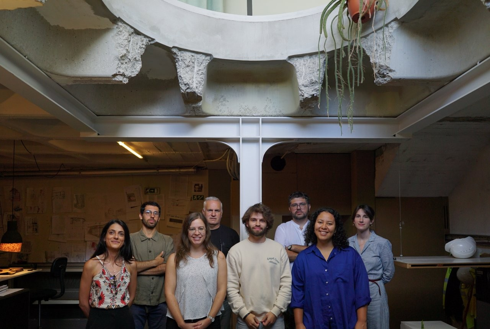

Rua Avelino Barros, 303
Póvoa de Varzim, Portugal
(Chamada para a rede fixa nacional)
Rua de Entreparedes, 25
Porto, Portugal
(Chamada para a rede fixa nacional)
Team Members
Education:
- Graduated in Architecture at FAUP (Faculdade de Arquitectura da Universidade do Porto).
- Between 2011 and 2012 studied at Accademia de Architectura di Mendrisio in Switzerland.
Working:
- Between 2012 and 2013 worked at David Chipperfield Architects in London.
- Founded the architecture platform built with Pedro Bragança in 2013
- Founded the practice ATELIERDACOSTA in 2015, sharing the studio with Pedro Matos.
Other activities:
- Editor of Revista Unidade 8, FAUP
- Invited teaching assistant at Porto Academy
- Member of Inner City program, in Porto
- Several collaborations with dance and theater performances
Selected prizes and awards:
- Finalist of SECIL Universidades national award
- Honorable Mention for best national architecture thesis - ARCHIPRIX
- “Best Design” award in the international competition “School for the refugees in Thailand” in colaboration with Marcos Veiga
Education:
- Graduated in Architecture at FAUP, Faculdade de Arquitectura da Universidade do Porto (2011-18).
- Studied as an exchange student at FADU-UBA, Facultad de Arquitectura, Diseño y Urbanismo - Universidad de Buenos Aires (2015).
- Specialization in Architectural Acoustics (2020).
Working:
- Worked at Ronald Janssen Architecten in Amsterdam (2016).
- Worked as an architecture intern at Martins Architecture Office in Guimarães (2018-19).
Other activities:
- Co-editor of Revista Unidade 8, FAUP (2014).
- FAUP Students' Union vice-president (2013-14).
- Co-coordinator of QUINZENA'15, a debate platform on architecture education (2015).
Education:
- Master's degree in Architecture at ISCTE-IUL (2015-2020).
Working:
- Internship at GMARC, Grupo de missão para o alargamento e requalificação do campus do ISCTE-IUL - Lisboa, Portugal (2019).
- Worked at Barbas Lopes Arquitectos - Lisboa, Portugal (2020-2022).
Other activities:
- Success evaluator and Participative Design at BIP-ZIP Project promoted by Lisbon Municipality between 2017 and 2018.
- Participation and collaboration at Saber de Fazer exhibition, Fista18 and Fista19, at ISCTE-IUL.
- Mentoring of 2nd grade students at Project Design III and IV with the professor Patrícia Barbas, at ISCTE-IUL.
- Founder of @atlasofcuriosity.
External Members
and other Collaborations
Former team members